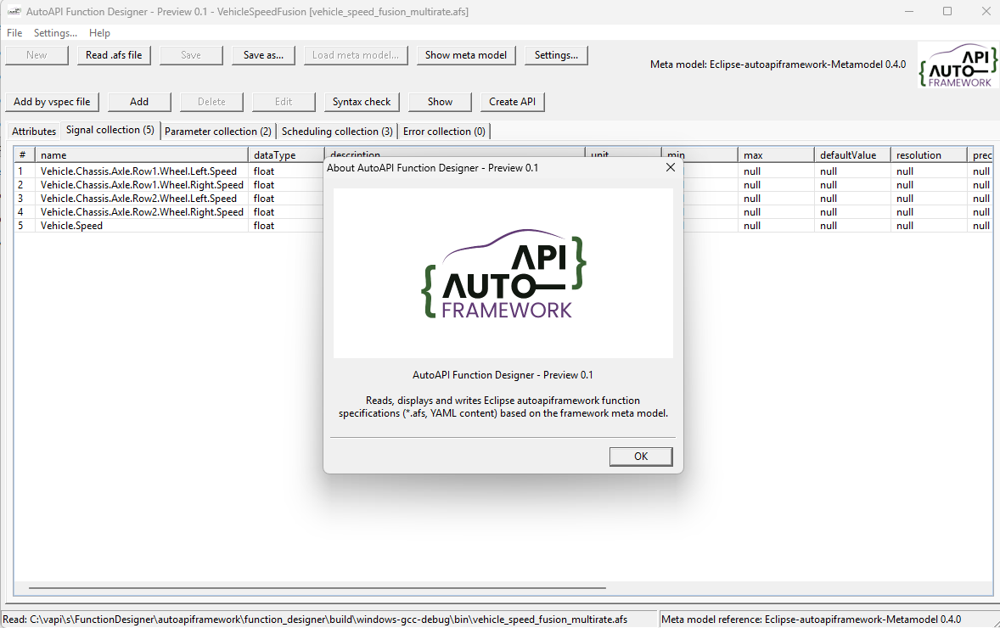

Dependencies and Build#
The Function Designer is a wxWidgets desktop application for reading,
inspecting, validating, and writing Eclipse autoapiframework function
specifications. Function specifications use the .afs extension and YAML
syntax.

Dependencies#
The project requires:
CMake 3.16 or newer (3.21 or newer for CMake presets)
A C++17 compiler
wxWidgets
Python with
vss-toolsversion 6.1.0
The build uses the vspec executable from vss-tools to convert Vehicle
Signal Specification (VSS) files to JSON. Install it in a virtual environment
before configuring CMake:
python -m venv venv
.\\venv\\Scripts\\Activate.ps1
python -m pip install vss-tools==6.1.0
On Linux, activate the environment with source venv/bin/activate. Keep the
environment active while configuring and building so CMake can find vspec.
wxWidgets is found from an installed package when available. Otherwise CMake
downloads and builds wxWidgets 3.2.6 automatically. The first configure may
therefore take some time. To require a pre-installed wxWidgets, configure with
-DACD_FETCH_WXWIDGETS=OFF.
Windows with GCC#
Install CMake, MSYS2 UCRT64 GCC, and mingw32-make. Add
C:\\msys64\\ucrt64\\bin to PATH, then run:
cmake --preset windows-gcc-debug
cmake --build --preset windows-gcc-debug
.\\build\\windows-gcc-debug\\bin\\AutoAPIFunctionDesigner.exe
Use the windows-gcc-release preset for a release build.
Windows with MSVC#
Install Visual Studio with the C++ desktop workload and Ninja. Run the commands from an x64 Native Tools Command Prompt or a Developer PowerShell:
cmake --preset msvc_x64_x64_ninja_debug
cmake --build --preset "msvc_x64_x64 (Ninja - Debug)"
.\\build\\msvc_x64_x64_debug\\bin\\AutoAPIFunctionDesigner.exe
Use msvc_x64_x64_ninja_release and
msvc_x64_x64 (Ninja - Release) for a release build.
Linux#
Install CMake and wxWidgets development files, then build with the Linux preset:
sudo apt-get install cmake libwxgtk3.2-dev
cd function_designer
cmake --preset linux-debug
cmake --build --preset linux-debug
./build/linux-debug/bin/AutoAPIFunctionDesigner
VS Code#
With the CMake Tools extension installed, select a configure preset and use Configure, Build, and Run. The available presets are:
windows-gcc-debugwindows-gcc-releasemsvc_x64_x64_ninja_debugmsvc_x64_x64_ninja_releaselinux-debuglinux-release
After a successful build, the meta model and sample function specifications are copied beside the executable. The application expects the meta model file there by default.